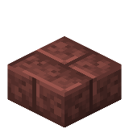
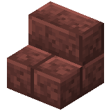
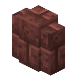

About
Bauxite bricks are a sedimentary rock block, crafted from bauxite.
The bauxite brick slab block is the slab variant of bauxite bricks.
The bauxite brick stairs block is the stairs variant of bauxite bricks.
Crafting Recipe

Craft four bauxite bricks by placing bauxite in a two-by-two square in a crafting table.
Usage
Bauxite can be used in the following recipes:
Craft six bauxite brick slabs in a crafting table by placing three bauxite bricks in a single row.
Craft four bauxite brick stairs in a crafting table by arranging bauxite bricks in a staircase pattern.
Craft six bauxite brick walls in a crafting table by filling the middle and bottom rows with bauxite bricks.


Cook bauxite bricks in a furnace to make cracked bauxite bricks.
Technical
Configuration
- In-Game Screen Name: Enable Bauxite Bricks
- Config File Key:
enable_bauxite_bricks - Default:
true/Yes
Determines whether bauxite bricks, bauxite brick stairs, bauxite brick slabs, and bauxite brick walls can be obtained.
true/Yes: They are enabled.false/No: They are disabled and hidden.
Dependency: If bauxite is disabled, bauxite bricks will be automatically disabled as well. Visit the bauxite page to read more about it.
Bauxite




| Renewable | Yes (Crafting) |
| Stackable | Yes (64) |
| Waterloggable |
|
| Tool | Pickaxe |
| Blast Resistance | 0.4 |
| Hardness | 0.4 |
| Luminous | No |
| Transparent | No |
| Catches fire from lava | No |
| Note block instrument | Bass Drum |
| Sulfur cube archetype | Slow Bouncy |